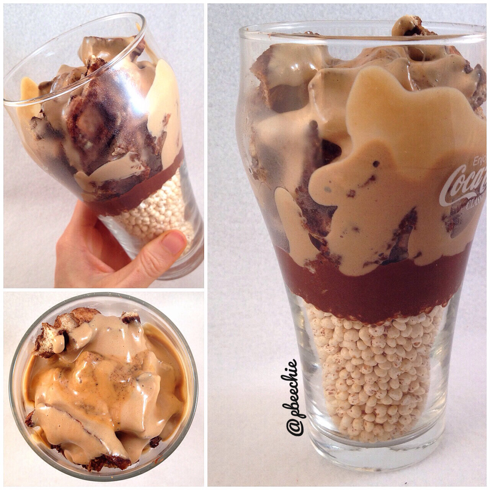

Mocha Peanut Butter French Toast Parfait
The first time I tried a french toast parfait... I melted <3 The second time... I melted. Ever since then...every single time is still like my first. It's so comforting and amazing. I actually cooked my french toast in a waffle this time and it took it to a WHOOOLE new level!! All the softness of french toast and all the fun ridges of waffles. Dang. 
- 1 TBSP unsweetened cocoa powder
- 1 TBSP + 1 tsp unsweetened almond milk
- 2 stevia packets
Peanut Butter Espresso Protein Drizzle
- 1/4 cup plain Greek yogurt
- 1/2 scoop pb marshmallow whey protein by cellucor
- 1/2 tsp instant espresso powder
- 1 stevia packet
Other Layers
- 3/4 cup puffed millet
- 1 serving mocha french toast
- 1/2 TBSP vanilla espresso almond butter
- 1/2 TBSP all natural peanut butter
Begin by making the mocha french toast. Then, let it cool to the side.
Make the healthy chocolate drizzle by mixing the 3 listed ingredients. Make the peanut butter espresso protein drzzle by mixing the 4 listed ingredients.
Slice your french toast and begin to layer the parfait. I did the puffed millet, the chocolate drizzle, the chopped french toast, the peanut butter espresso protein drizzle, and the two nut butters.
Dig in!